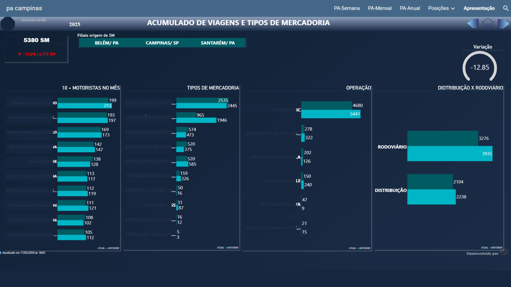
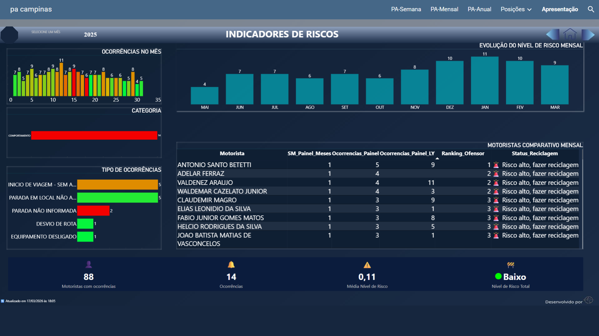
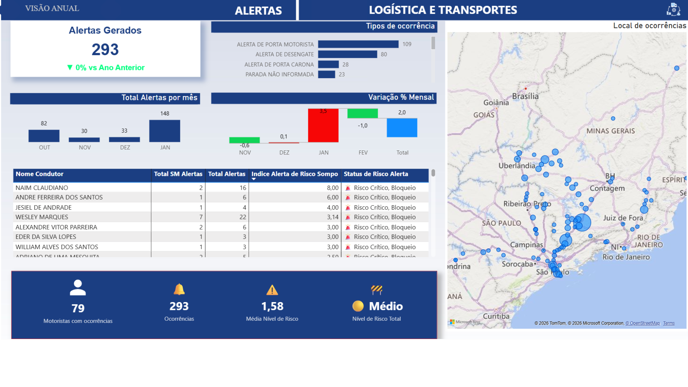

Análise de Performance e Risco de Motoristas
Sistema analítico desenvolvido para monitorar comportamento de motoristas, identificar padrões de risco e apoiar decisões estratégicas em operações logísticas.
Contexto do Projeto
Em operações logísticas, o desempenho dos motoristas impacta diretamente a segurança, os custos e a eficiência da operação.
O principal desafio era transformar dados operacionais dispersos em uma visão estruturada, capaz de identificar padrões de comportamento, reincidência e níveis de risco.
Solução Desenvolvida
- Modelagem e estruturação de base histórica de ocorrências
- Criação de indicadores de performance e risco por motorista
- Classificação por níveis de criticidade e reincidência
- Dashboard interativo para análise operacional e tomada de decisão
Visualização
Abaixo exemplo da estrutura analítica utilizada:



* Dados sensíveis foram anonimizados para preservar a confidencialidade da operação.
Resultados Gerados
- Identificação de padrões de reincidência entre motoristas
- Priorização de ações preventivas com base em dados
- Redução de decisões reativas na operação
- Aumento da visibilidade sobre riscos operacionais
Tecnologias Utilizadas
Google Sheets | Power BI | Modelagem de Dados | Análise de Indicadores | JavaScript (para interatividade) | vsCode (IDE) | Metodologia Ágil para desenvolvimento iterativo
Diferencial Analítico
O projeto foi estruturado não apenas para visualização de dados, mas para permitir uma análise contínua de risco e performance, possibilitando atuação preventiva e tomada de decisão baseada em dados.
Quer aplicar isso na sua operação?
Posso estruturar um modelo semelhante para sua empresa, adaptado ao seu contexto e necessidades.
Conversar sobre este projeto